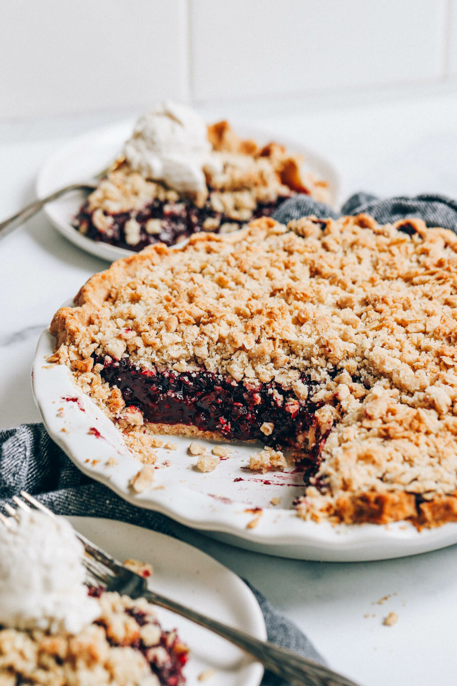

Mixed Berry Crumble Pie

From the crust to the filling to the crumble topping, this vegan and gluten-free mixed berry pie is perfection
It's a stunning dessert for the holiday table or anytime you're craving a berry-filled treat. Enjoy it on its own or take it to the next level with a scoop of vanilla ice cream or coconut whipped cream!
ingredients
- 1 batch gluten-free pie crust
- 1/4 cup cane sugar
- 1/4 tsp sea salt
- 1/2 tsp vanilla extract
- 1/3 cup melted vegan butter
- 1/2 cup rolled oats
- 3/4 cup Minimalist Baker Gluten-Free Flour Blend
- 8 cups frozen mixed berries
- 2/3 cup cane sugar
- 1 tsp lemon zest
- 1/4 cup Minimalist Baker Gluten-Free Flour Blend
directions
- Preheat oven to 375 degrees F (190 C), and set out a standard size (9-inch) pie pan. If making homemade pie crust, prepare it at this time. Note: With both homemade and store-bought crust, the crust needs to par-bake for 20 minutes before adding the filling in step 4.
- CRUMBLE TOPPING: While the crust chills, make the crumble topping. In a medium mixing bowl, combine the cane sugar, salt, vanilla, and melted butter. Add the oats and mix until well combined, then add the flour and mix until the topping is somewhat crumbly and sticks together when pressed between your fingers. Set aside.
- FILLING: Add the berries to a medium saucepan over medium heat. Stir frequently, until the berries begin to release a bit of juice. Add the sugar and lemon zest and continue cooking until very liquidy and just barely bubbling, about 3-5 minutes. Sprinkle in the flour and stir continuously until the mixture has thickened considerably and looks very thick and jammy, about 5-7 minutes longer. Turn off the heat.
- Once the crust has finished par-baking, transfer the berry filling to the crust. Add the crumble topping on top of the berries by squeezing it together in your hand then “crumbling” it on top. Cover with foil and transfer the pie back to the oven. Bake for 15 minutes, then uncover and bake for another 15 minutes to let the topping crisp up.
- Let cool completely (at least 2-3 hours) before slicing and enjoying — this ensures the berry filling will firm up. After slicing, if you prefer warm pie, individual servings can be warmed in a 200 degree F (90 C) oven or very briefly in the microwave. Serve with a scoop of vanilla ice cream or coconut whipped cream (optional) and enjoy!
return home